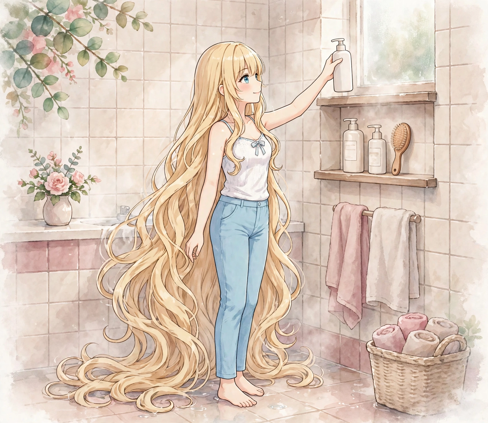

トップ ＞ ヘアケア ＞ お風呂時間で完結させるヘアケアルーティン
お風呂時間で完結させるヘアケアルーティン

平日の夜は、お風呂の時間も短く済ませたいもの。ヘアケアの手順を浴室の動線に合わせて組み立てると、待ち時間を無駄にせずに一連の流れで完結できます。この記事では、ルーティンの組み立て方を整理します。
動線は「予洗い→シャンプー→放置→身体」の順
基本の動線はこうです。入浴したら、まず髪と頭皮をお湯で予洗いします。次にシャンプーをしてすすぎ、トリートメントをつけます。トリートメントの放置時間は、商品の表示の目安に従いますが、その待ち時間を、身体を洗う時間に充てるのが動線の工夫です。放置が終わったらすすいで、湯船や上がる準備へ進みます。
この順番にすると、放置の待ち時間が「ただ待つ時間」ではなくなります。逆に、身体を先に洗ってから髪に進むと、放置の間にすることがなくなりがちです。
道具の置き場所も、動線に合わせる
シャンプー、トリートメント、身体を洗うアイテムは、使う順番に並べて置くと、手順が体に染みつきます。浴室の棚の左から右へ、使う順に並べるだけでも、迷いと取り違えが減ります。家族と共有する浴室では、自分の分を小さなカゴにまとめておく方法も有効です。
タイマーを使う場合は、放置時間の管理に使います。スマートフォンを持ち込まなくても、キッチンタイマーを脱衣所に置いておく方法があります。
上がった後までを、一続きの流れに
浴室を出た後のドライヤーまで含めて、一続きの流れとして設計します。タオル、ドライヤー、アウトバスのアイテムを脱衣所の定位置にまとめておくと、流れが止まりません。ルーティンは、時間の節約だけでなく、「考えなくても進む」こと自体が、毎日のケアを続ける力になります。
動線の組み立ては、一度作れば毎日使えます。自分の浴室の形に合わせて、順番と置き場所を決めてみてください。
家族とお風呂の時間が重なる場合は、順番の設計も大切です。子どもと一緒に入る日は、自分のヘアケアの手順を短い版に切り替える、トリートメントの放置中に子どもの身体を洗う、といった組み替えが現実的です。ルーティンは、完璧な形を1つ作るより、「通常版」と「短縮版」の2つを用意しておくと、生活の変化に対応できます。湯船につかる日は、髪をまとめて湯船の外に出すなど、湯船の時間とヘアケアの時間を分ける工夫もあります。お風呂の時間は限られていますが、手順の設計次第で、できることの幅は広がります。
ルーティンが定着したら、時々見直すことも大切です。季節が変わると使うアイテムや放置時間の感覚も変わります。動線の並べ替えは数分でできる作業なので、季節の変わり目に棚ごと見直す習慣をつけるのがおすすめです。

セラフィナ「放置時間は身体を洗う時間に。動線を決めると、お風呂で全部完結するね」